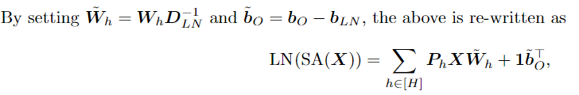

《Attention is not all you need》阅读笔记
本文是Attention is not all you need: Pure attention loses rank doubly exponentially with depth的阅读笔记，主要贡献为：
- 提出了一种路径分解(path decomposition)的方式来理解自注意力网络(SA or SANs)；
- 从理论和实验上证明了如果没有skip connections和MLP，纯SANs将随着深度的增加，将以双倍指数的速度退化到一个秩为1的矩阵（重复的token），称为秩坍缩(rank collapse)，也可以说SA具有很强的token uniformity的偏执假设;
- 结合skip-connection的有效性和路径分解的解释，可以将Transformer结构理解为浅层网络的集成；
这篇文章的公式很多，查了查作者是数学科班出身，笔者能力有限，文中还有很多推导和表述不能理解；阅读过程中我也参考了一位大佬很详细的解读：知乎 - 迷途小书僮
首先，需要对后续公式的记号做个说明：
加粗的字母表示列向量（小写）或者矩阵（大写），\(\mathbf{1}\)表示一个全为1的列向量；
\([H]=(1,\dots,H)\)；
作者定义了一种\(l_1,l_\infty\)混合的矩阵范数： \[ ||X||_{1,\infty}=\sqrt{||X||_1||X||_\infty} \] 该范数不满足三角不等式，但是是正定的，齐次的；
理论部分
路径分解
记输入为\(n\times d_{in}\)矩阵\(X\)，有\(L\)层self-attention层，每层有\(H\)个头，输出序列的长度为\(m\)，第\(h\)个SA的输出可以记为：
其中，\(W_{V,h}\)是一个\(n\times d_v\)的Value变换区镇，\(P_h\)是一个\(n\times n\)的行随机矩阵：
其中\(W_{K,h}\)和\(W_{Q,h}\)都是\(d_{in}\times d_{qk}\)的变换矩阵，\(W_{QK,h}=W_{Q,h}W_{K,h}^T\)
\(P_h\)是使用softmax归一化处理的Attention Map，但是为什么称row-stochastic不太清楚；
\(P_h\)在展开后为什么少了两项？这里需要注意softmax的两个性质：
平移不变性 \[ \sigma(x+C)_i = \frac{e^{x_i}e^C}{\sum_je^{x_j}e^C}=\frac{e^{x_i}}{\sum_je^{x_j}}=\sigma({x})_i \] 因此，展开后与\(X\)无关的常数项\(\mathbf{1b_{Q,h}^T b_{K,h}1^T}\)可以省略；
这里softmax是逐行归一化的，因此对于一个由相同的列向量组成的矩阵（每行都是同一个值），softmax对每行的权重都是平均分，整体上不改变结果；因此类似于右乘了一个\(\mathbf{1}^T\)的项，都可以在softmax内省略；
接下来将多个头合并，给出一个多头注意力模块的简洁的表达式（不包含skip-connection）：
其中，\([\text{SA}_1(X),\dotsm,\text{SA}_H(X)]\)是\(n\times Hd_v\)的，\([W_{O,1}^T,\dots,W_{O,H}^T]^T\)是\(Hd_v\times d_h\)的，偏移项写得好像有点问题（？不过不重要），之后使用矩阵的分块乘法法则得到第二行的求和式，其中\(W_h=W_{V,h}W_{O,h}^T\)
偏移项可以通过改写\(X\)和\(W\)而消除，因此在后面的推导中不再使用偏移项
当多个SA堆叠时，我们便可以通过如下的递推式：
得到一个第\(L\)层输出\(X^{L}\)关于输入\(X\)的表达式
对于这个式子，可以看成是从输入到第L层的一个有向图，每一层有\(H\)条路；
\(P_{path}\)与输入有关，\(W_{path}\)与输入无关；
如图，整个SAN被分解为了若干条路径的组合；
SAN收敛到rank-1矩阵
单头注意力的情况
假设要证明的收敛目标是\(1\mathbf{x}^T\)，这是一个所有行都相同的rank-1矩阵，那么只要证明第\(h\)层的输出\(X\)，与\(1\mathbf{x}^T\)的距离有一个上界，并且这个上界随着\(h\)的增加越来越小；
作者给出了如下目标函数，残差（期望与观测的差）：
在\(H=1\)，\(L\)层，且满足
的条件下，作者证明（在附录中给出）：
那么只要\(4\beta<\sqrt{d_{qk}}\)，不等式右边就会随着\(L\)的增加快速收敛到0；作者的实验证明这是一个很宽松的条件；
附录中有简略的证明，知乎 - 迷途小书僮对大部分的推导过程给出了详细的阐述，我就不再赘述了
多头注意力的情况
推广到有\(H\)个头，得到残差的上界：

那么只要\(4\beta H<\sqrt{d_{qk}}\)，不等式右边就会随着\(L\)的增加快速收敛到0；
抵消秩崩塌的方式
Skip connections很有用
我们可以将选择Skip-connections的路径记为\(h=0\)，同时有\(P_0=I\)，\(W_0=I\)，则之前的式子可以重新写成：
作者在附录中同样给出了在这个式子下的res(X)的上限，但是这个上限非常大，Skip-connections增加了路径分布的多样性（路径参数组合的多样性）：因为skip-connection算一条路径长度为0的路，因此对于\(L\)层SA，长度为\(l\)的路径数量为： \[ \mathcal{|P_l|}= \left( \begin{array}{c} L\\l \end{array} \right) H^l \]
相反地，还可以给出一个目标函数的下界，说明加入Skip-connections之后SANs结果不会收敛到rank-1矩阵： \[ ||res(X^L)||\ge||res(X)|| \] 当对于所有层都有\(W_v^l=0\)时，上式取等；即使在\(L\rightarrow \infty\)，\(\beta\)很小时，上式也成立；
原文里有一句 for any parametrization that renders the contribution of the SAN layers orthogonal to the input，我不太理解
有此也可以得出结论，SANs是浅层网络的集成，只不过在各个组件之间不是完全解耦的，因为一个head可能出现在多个path中；
MLP有用
且不看严谨的证明，在weight和bias都是随机初始化的时候，并且输入的token也各不相同的前提下，也能直观地感觉到，反复使用MLP能够避免收敛到rank-1矩阵；
作者同样给出了加入MLP后，res(X)的上界：
主要是通过让收敛变慢来避免秩坍缩；
LayerNorm没用
这里的无用是针对解决秩坍缩问题而言的，因为应用LN后，SA(X)仍然能改写成与原来相同的形式，之后也就可以得到同样形式的上界：

实验部分
导致秩坍缩的验证
作者首先在几个常见的Transformer结构上进行了实验，BERT，Albert，XLNet，挥着了相对残差\(||res(SAN(X^l))||_{1,\infty}/||SAN(X^l)||_{1，\infty}\)随着层数增加的变化，使用在维基百科上的传记摘录的的32个样本训练模型，\(d_{in}=128\)
主要还是skip-connections对于避免秩坍缩的作用更明显
避免秩坍缩的验证
之后，作者训练单层Transformer来学习两对圆弧序列，训练时时teacher forcing的，那么如果在完全自回归的推理时，两条弧线收敛到同一点，而不是延续训练的轨迹，则认为发生了秩坍缩：
实验结果表明：
- skip-connections和MLP有效避免了秩坍缩；
- 当维度增大时，对于\(4\beta<\sqrt{d_{qk}}\)的条件，看似是不等式右边增加使得收敛条件更宽，实际上\(\beta\)作为\(|||W^l_{QK}||_1||W_V^l||_{1,\infty}\)的上界也在增加，使得收敛条件更紧；
路径有效性
下面的实验试图验证，随着路径长度的增加，即使所涉及的非线性操作数增加（可以理解为路径数量），路径有效性也在降低：
作者分别在序列记忆、学习排序和凸包预测任务上训练Transformer模型；
在上文中我们提到，路径之间不是完全解耦的，如何找到某一个路径的显示表示，如何衡量其单独的贡献？
对于前一个问题，没办法确定一个训练好的Transformer具体是哪些路径的组合，作者就从全体路径中，按照给定的长度随机采样一个路径集合的子集，用该子集中路径的贡献的归一化总和（平均贡献？）；
衡量任意一条给定路径序列\(h_1,\dots,h_L \in [H\cup0]^L\)，使用下面式子的结果作为该路径的输出： \[ (P_{h_L}^L\dots P_{h_1}^1)X(W_{h_1}^1\dots W_{h_L}^L) \]
记忆和排序任务都验证了路径越长效果越差的假设，凸包任务有明显的类别不平衡问题，上述假设体现不明显，但是随着路径的增加，模型预测结果准确率的方差在变大；
小结
至此位置，论文理解只有一半，剩下一半几乎都是附录中的证明，这篇文章的理论性很充足，一般人学不来啊；
之前总是讲CNN的归纳偏置是局部性和平移不变性，这篇文章让我们知道了Transformer的token一致性的归纳偏置，以及纯SA竟然这么拉（如果证明严谨无误并且没有比秩坍缩更严重的问题的话）？那么是不是靠着MLP+skip connection+别的什么结构会有更好的结果？